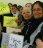
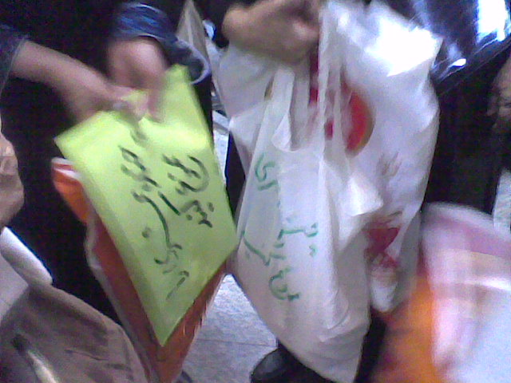
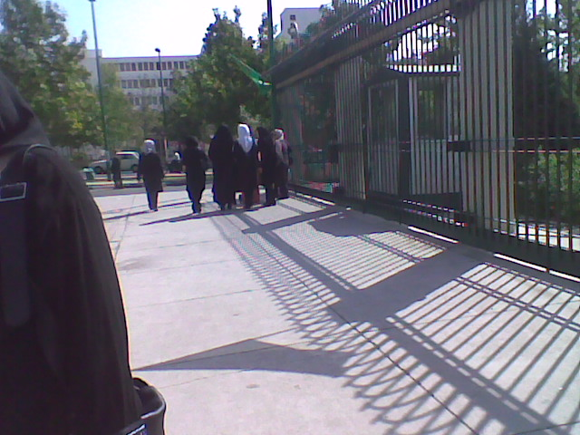
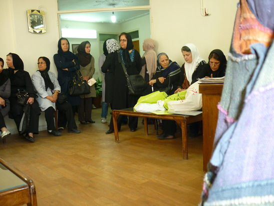
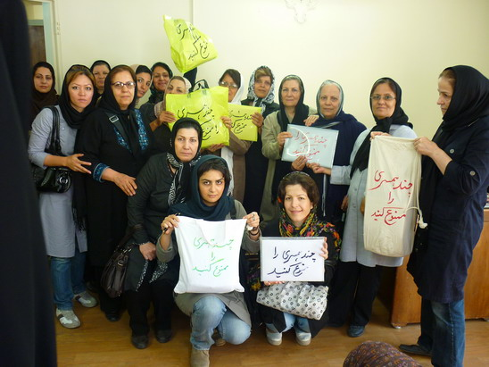
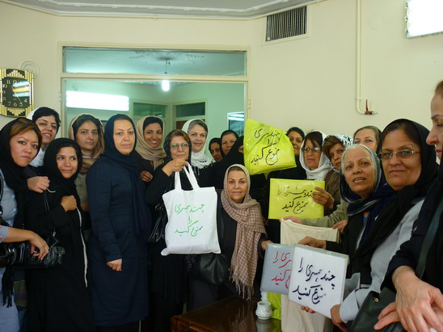

|
|
|
Browsing
Contact Us |
Campaigners |
Face to Face |
Tribune |
Interview |
News |
On the Web |
One Million |
Report
Farsi | Français | German | Italian | Spanish | العربية Also in this section
|
 Fifty Equal Rights Activists with Five Thousand Signatures in Majles (Parliament)Tuesday 28 September 2010 Change for Equality: More than 5000 signatures were delivered to the Iranian parliament (Majles) in opposition to passing and promotion of a polygamy law.
 On the morning of Sunday September 26, fifty gender equality activists from different cities personally delivered more than five thousand signed copies of a statement objecting to controversial articles of the Family Protection Bill. The group (ranging from younger activists to mothers who belong to the previous generation) delivered the signatures to the Judicial Committee of the parliament. Through their presence in Majles, they informed the representatives of the dissatisfaction of Iranian citizens about certain articles of this bill and demanded that those articles not be passed into law.
 Initially the group was not permitted to meet with the committee members; however, they insisted on their citizens’ right to meet with parliament members by visiting the Office of Public Relations belonging to Ali Larijani (head of the parliament). Eventually they were informed that one person representing the group would be allowed to meet with the members of the Judicial Committee and deliver the signed petitions.
 As a representative of the group of gender equality activists, Ms. Khadijeh Moghaddam met with Mr. Shahrokhi and Mr. Ghazanfar-abadi (president and vice president of the Judicial Committee of Majles) on Sunday afternoon and hand-delivered the signature sheets to them. After the meeting, Ms. Moghaddam said that she found the discussion positive. She also stated that she was able to meet with Representative Zohreh Elahyan and that Ms. Elahyan had expressed her firm opposition to article 23 of the family protection bill.
 As a continuation of their widespread efforts to eliminate the controversial articles of the Family Protection Bill, gender equality activists drafted a statement objecting to article 23 and collected signatures from residents of several cities; these cities are: Tehran, Lahijan, Esfahan, Karaj, Zanjan, Rasht, Some’e-sara, Bandar-Anzali, Ghaem-Shahr, Tabriz, Khoy, Shiraz, Lar, Khorram-abad, Mashhad, Gorgan, Babol, Babolsar, Sari, Yazd, Ahvaz, Arak, Aligoudarz, Hamedan, Eslamshahr, Shahr Rey, Ghazvin, Mahallat, Kashan, Malayer, Kermanshah, Nahavand, and Boroujerd. An interesting incident was that while the signatures were being delivered to the parliament, a group of educators who had come to pursue teachers’ demands in Majles also signed the petition and expressed their opposition to article 23 (the article that promotes polygamy for men).
 These five thousand signed statements, now is in the hands of the Judicial Committee of the Majles, are the first portion of collected signatures and gender equality activists will continue to collect the views of citizens in this regard. |